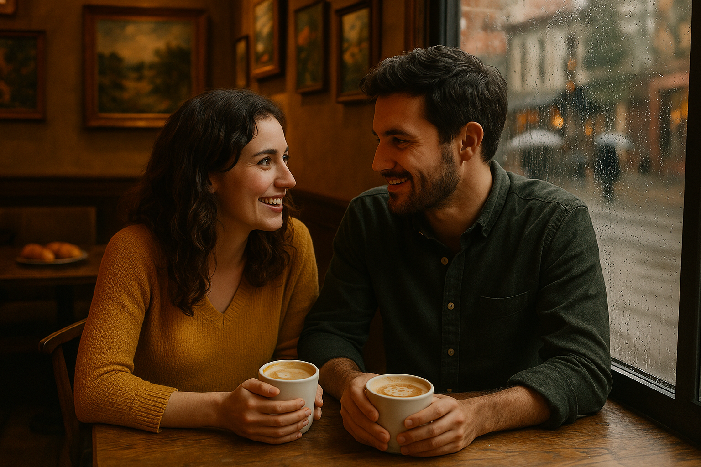

Третата им среща се случи в малко, но изключително уютно кафене, скрито на една тиха улица в сърцето на града. Веднага щом прекрачиха прага, ги обгърна топлината на мястото – смесица от аромати на прясно изпечени кроасани, силно еспресо и леко горчивия аромат на какао. По стените висяха картини на местни художници, а меката музика на джаз пиано допълваше атмосферата, придавайки ѝ усещане за спокойствие и интимност. Избраха си ъглова маса до прозореца, откъдето се разкриваше гледка към улицата, осеяна с бавно крачещи минувачи, забързани към ежедневието си. Навън ръмеше лек дъжд, а капките се стичаха по стъклото, създавайки илюзия за живописен акварел. Вътре обаче беше топло и приятно, сякаш времето бе спряло. Докато отпиваха от горещите си напитки – той беше избрал капучино с канела, а тя предпочете лате с бадемово мляко – разговорът им се завъртя около изкуството. Те споделяха възхищението си от начина, по който цветовете и светлината могат да уловят моменти, които думите не винаги успяват да изразят. С всяка минута диалогът им ставаше все по-задълбочен, изпълнен с ентусиазъм и вдъхновение. — Ами ако съчетаем фотографията и живописта? – предложи той, а очите му проблеснаха от вълнение. – Да разкажем истории не с думи, а чрез образи, които се допълват и разкриват различни пластове на едно и също усещане. Тя се усмихна, загледана в него, сякаш за първи път осъзнаваше колко много общо имат. — Това би било невероятно – прошепна тя, загрижено прехвърляйки идеи в ума си. – Представи си снимка, която запечатва един миг от реалността, а до нея картина, която пресъздава емоцията, която този миг носи. Така, без да осъзнават напълно, проектът им се роди точно тук, на тази маса, сред ароматите на кафе и ванилия. Те обсъждаха идеи, рисуваха с думи бъдещите си творби, планираха изложби, експерименти с форми и цветове. Всеки детайл ги сближаваше още повече. Докато времето навън течеше неусетно, вътре, в малкото кафене, между тях се случваше нещо по-голямо – връзката им се задълбочаваше, преливаше от приятелство в нещо по-интимно, по-трайно. Проектът им се превърна не само в повод за нови срещи и творческа работа, но и в мост към нещо, което може би никой от тях не бе планирал – любов. 